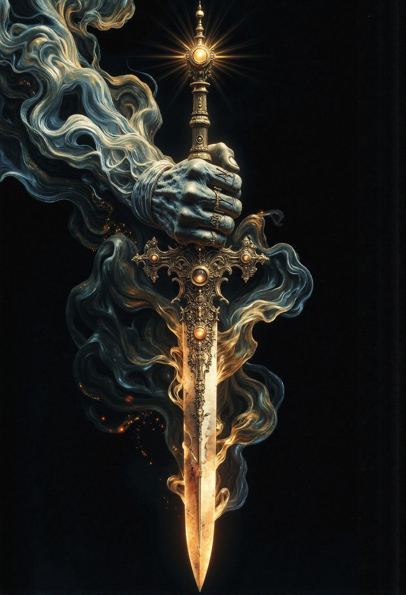
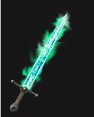

EQUIPMENT

Necropulse Reaper
 Haste
Haste
Ethereal Ghost
Ghost Drain
DrainBorn from the catastrophic merger of four spectral blades, this weapon exists in a constant state of impossible motion. The Haste Sword grants it velocity beyond mortal comprehension, striking faster than thought itself can form. The Ethereal Sword allows it to phase between dimensions mid-swing, bypassing all physical defenses by existing in multiple planes simultaneously.
The Ghost Sword's essence makes each strike pass through armor and flesh to wound the soul directly, leaving victims intact but spiritually hemorrhaging. Meanwhile, the Drain Sword hungrily feeds on everything the phantom blade touches - not just blood and life force, but memories, emotions, and the very essence of existence itself.
When all four powers converge, the weapon becomes a blur of translucent death that moves through battlefields like a supernatural hurricane. It strikes from angles that shouldn't exist, draining victims before they even realize they've been cut. The wielder becomes a ghost-like figure wrapped in impossible speed, phasing in and out of reality while leaving behind only empty husks drained of everything that once made them whole.
The blade's true horror lies in its efficiency - entire armies can fall in moments, their life forces absorbed so quickly that their bodies remain standing even as their souls are completely devoured. It doesn't just kill; it erases, leaving behind perfect corpses with expressions of confusion, as if they died wondering what happened to their very sense of self.
It is the ultimate assassin's weapon unseen, unfelt, and absolutely merciless.